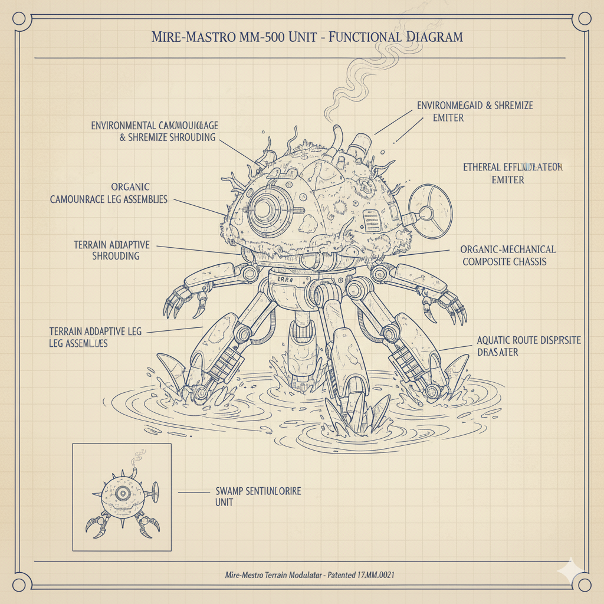

Introduction: The Burden of Belonging
Maintaining privacy and menace in a locale as alluring as the Louisiana swamps presents a unique challenge, especially for those who prefer solitude for their ancient, territorial existence. While the cypress knees and Spanish moss provide natural camouflage, the allure of the bayou, particularly near vibrant New Orleans, can be a magnet for the curious. For an ancient, shapeshifting creature, constant disturbance is not merely an annoyance—it's an affront to one's very nature.
This was the plight of Balthazar "Balty" Croc-Foot, a venerable Rougarou who had long called a secluded swamp shack home. His desire for a yard that deterred, rather than invited, strangers was paramount. Yet, his peace was constantly threatened by an unending parade of well-meaning (or oblivious) ghost hunters, intrepid nature tourists, and even errant Mardi Gras Krewes whose parades occasionally drifted off course. Balty needed to secure his sanctuary, and Arcane Automata & Apparatus had just the solution. We deployed our specialized "Mire-Maestro" Terrain Modulator Unit (MM-500), designed to install bespoke, swamp-appropriate decor and deterrents, transforming his humble shack into an uninviting, yet perfectly camouflaged, fortress.
The Problem: Unwanted Excursions
Balthazar's location, just off a less-traveled waterway, was a continuous beacon for the curious. His swampy solitude was frequently interrupted by canoes full of "paranormal investigators" carrying thermal cameras, birdwatchers mistaking his morning glowering for a rare swamp owl, or even lost parade floats drifting perilously close to his fishing dock. The level of intrusion was simply unacceptable for an entity of his stature.
"Every time I turn around, there's another airboat full of folks lookin' for 'cryptids' or a college kid with a drone peekin' over the cypress trees. A Rougarou needs his beauty sleep, and these city-folk just don't respect the moss-draped 'No Trespassing' vibe." — Balthazar "Balty" Croc-Foot, Swamp Elder
Service Use Case: Gnome Installation (and Beyond) in Action
The Mire-Maestro Terrain Modulator Unit (MM-500)—a multi-limbed, amphibious robot perfectly adapted to navigating muck and water—quickly began its work. Its mission was to utilize its "Gnome Installation" capabilities to establish a powerful territorial defense.
Subterranean Sentinel & Bog-Beast Blight
Our "Gnome Installation" service, in the swamp, means creating Subterranean Sentinels. These aren't lawn ornaments; they are camouflaged, sensor-laden deterrents programmed to deliver swamp-specific scares.
Action: When a canoe of overly enthusiastic ghost hunters paddled within the perimeter, a camouflaged NMM-500 sub-unit would emerge silently from the murky water. It then let out a convincing, guttural "gator roar" or a sudden, eerie, high-pitched swamp wail, immediately accompanied by a pair of glowing red eyes that seemed to float just above the surface.
Result: Enthusiastic "cryptid hunters" quickly become terrified "escapees," reversing course and paddling away at record speeds, convinced they had captured undeniable, yet deeply terrifying, evidence.
Mystical Mist & Ethereal Effluvium Dispenser
A crucial function of the MM-500 is environmental modification to enhance the "spooky swamp" atmosphere. This is achieved through the precise dispersal of non-toxic, unnervingly cool mist and strategically released, musky swamp aromas, providing an olfactory deterrent.
Action: As a nature photography tour boat drifted too close for Balty's comfort, the MM-500 deployed a localized, dense, chilling mist that hugged the water's surface around Balthazar's shack. This was paired with the distinct, unsettling scent of "Bayou Banshee Breath." The boat's captain immediately deemed the area too "haunted" for safe passage and turned around.
Bayou Barrier & Parade Pathway Diversion
The MM-500's amphibious design allows it to subtly manipulate shallow waterways and vegetation, creating natural, yet ominous, barriers to redirect unwanted water traffic.
Action: When a lost Mardi Gras Krewe float, complete with loud music and flashing lights, started drifting dangerously close to his hidden inlet, the MM-500 activated submerged stabilizing arms and gentle water jets. It simultaneously manipulated dense underwater reeds to create a minor "current anomaly," subtly pushing the float into a different, equally scenic (and non-Balthazar-related) bayou.
Result: Balthazar's afternoon slumber was undisturbed by impromptu jazz bands or unwanted bead showers.
Client Satisfaction & Conclusion
Thanks to the efficient and specialized efforts of the Mire-Maestro MM-500, Balthazar "Balty" Croc-Foot's swamp shack is now the epitome of inhospitable swamp chic. His much-needed naps are undisturbed, his hunting grounds remain private, and the only "spirits" he encounters are those he chooses to commune with. The MM-500 has proven an invaluable asset for maintaining his desired level of privacy and dread.
"That MM-500 is slicker than an oil spill on an alligator's back! I ain't seen a tourist boat near my porch in weeks. Now I can nap in peace, hunt my dinner, and truly savor the silence of the swamp. Arcane Automata & Apparatus understands a monster's needs like nobody else." — Balthazar "Balty" Croc-Foot, Satisfied Swamp Dweller
If your domain is suffering from unwanted attention, if your natural habitat is being compromised by the mundane, or if you simply need the ultimate in specialized territorial defense, contact Arcane Automata & Apparatus today. Leave the mundane to the malicious.